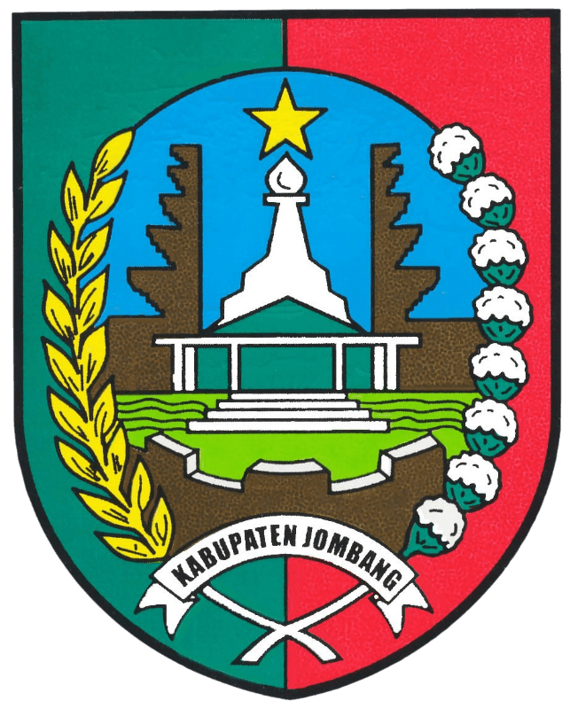

Tentang Saya
Mahasiswa Teknik Informatika yang memiliki impian menjadi seorang lulusan berkompeten dalam bidang informatika serta bermanfaat bagi orang orang disekitar. Saat ini sedang melakukan perkuliahan dan bekerja sebagai fullstack developer paruh waktu. Sedang menempuh pendidikan di STIKI Malang untuk mengembangkan kompetensi, soft skill serta menambah network. Fokus dalam pengembangan diri agar menjadi programmer handal dan dapat diandalkan dengan terus belajar dan pantang menyerah.
Keahlian
Teknisi berpengalaman dan berkemampuan tinggi dengan 2 tahun pengalaman dalam operasi dan perawatan peralatan. Mahir dalam komputer dan jaringan dengan pemahaman yang kuat tentang elektronik. Seorang pemain tim yang kuat dengan kemampuan untuk menyesuaikan diri dengan perubahan dan keterampilan pemecahan masalah cepat. Lulusan SMK Teknik Komputer dan Jaringan.

Jombang
Jombang (Jawa: Hanacaraka: ꦗꦺꦴꦩ꧀ꦧꦁ, Pegon: جَومباڠ) adalah sebuah kabupaten yang terletak di bagian tengah Provinsi Jawa Timur, Indonesia. Ibu kotanya adalah Kecamatan Jombang. Kabupaten Jombang memiliki ketinggian 44 meter di atas permukaan laut, dan berjarak 79 km dari barat daya Surabaya, ibu kota Provinsi Jawa Timur. Luas wilayah kabupaten Jombang yakni 1.159,50 km². Pada tahun 2021, penduduk Jombang mencapai 1.325.914 jiwa, dengan kepadatan penduduk 1.143 jiwa/km2.